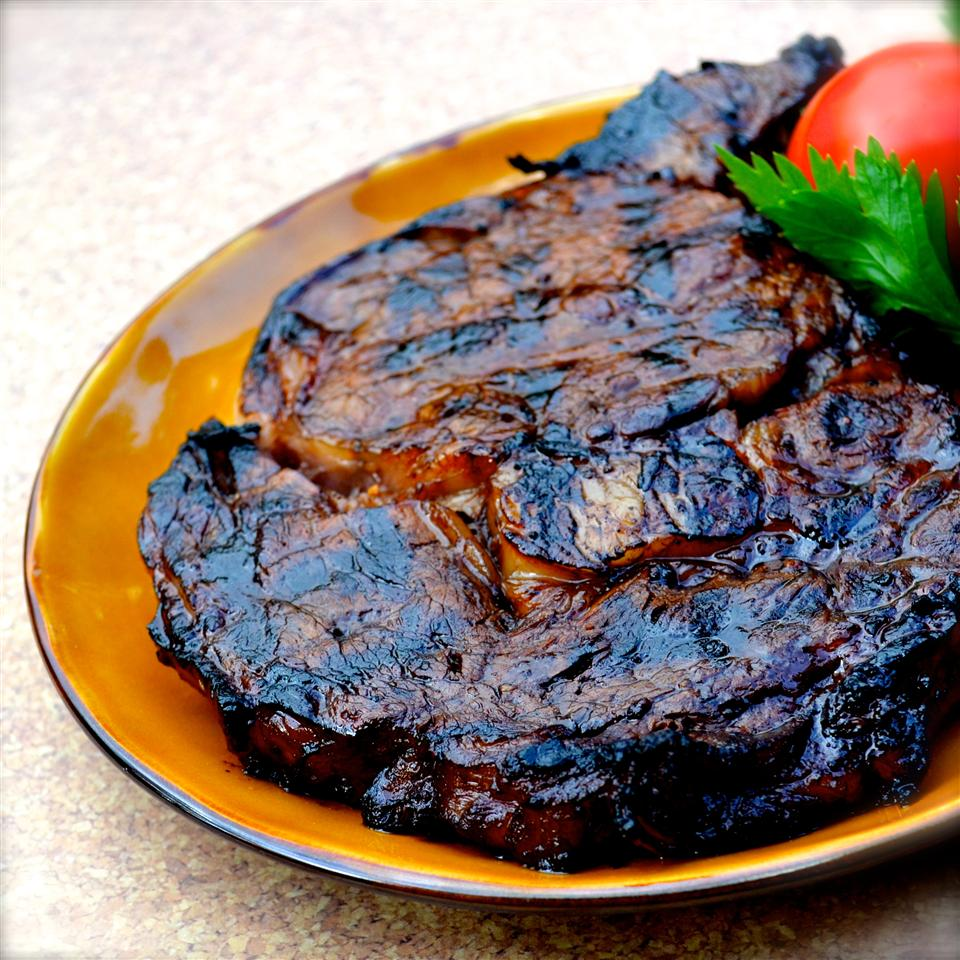

Quick-and-Easy Steak Marinade

Description
A quick-and-easy marinade recipe for steaks.
Preparation time: 10 minutes
Cooking time: 20 minutes
Additional time needed: 4 hours
Total: 4 hours 30 minutes
Servings: 2
Ingredients
- 2 (8 ounce) boneless rib-eye steaks
- salt and ground nlack pepper to taste
- 1 pinch garlic powder, or to taste
- 1 pinch Montreal steak seasoining, or to taste
Marinade
- 1/3 cup extra virgin olive oil
- 1/3 cup Worcestershire suace
- 1/3 cup soy sauce
- 1/3 cup balsamic vinegar
- 3 tablespoons Dijon mustard
- 3 gloves garlic, chopped
- 1 dash liquid smoke flavouring
Steps
- Place steaks in a flat baking dish or container. Cut slits at 1-inch intervals in the fat around the edges of the steaks. Gently pierce both sides of each steak a few times with a fork.
- Sprinkle each steak with salt, pepper, garlic powder, and Montreal steak seasoning. Pat seasonings into steaks.
- Whisk olive oil, Worcestershire sauce, soy sauce, balsamic vinegar, Dijon mustard, garlic, and liquid smoke together in a bowl. Pour marinade over steaks to coat. Cover container or baking dish with plastic wrap and marinate steaks in the refrigerator for 2 hours. Turn steaks over and marinate for another 2 hours.
- Preheat an outdoor grill for medium-high heat and lightly oil the grate.
- Cook the steaks on the preheated grill until they start to firm, and are reddish-pink and juicy in the center, 8 to 10 minutes per side for medium-rare. An instant-read thermometer inserted into the center should read 130 degrees F (54 degrees C).